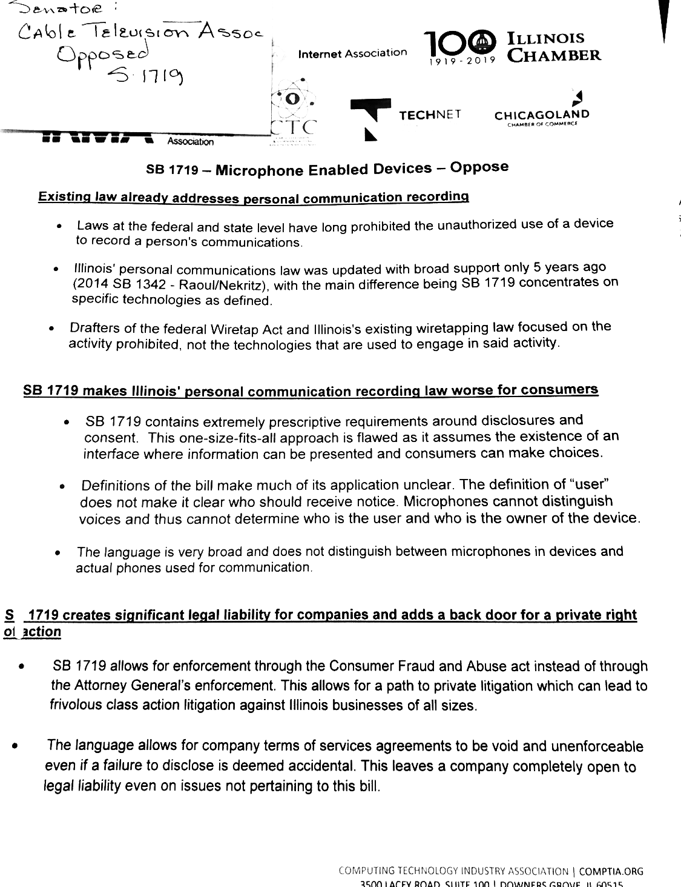

#^_blog_post_json
{
feed:{
attachments:[{"url":"https://ia801408.us.archive.org/34/items/ITStuff010519/itstuff010519.ogg","mime_type":"audio/ogg"}]
},
"title":"Episode 010519",
"author":"shi",
}
#^_blog_post_body
{blog_play}
{blog_bit_wrap}
#^blog_bit_wrap
{blog_bit}
#^blog_bit form=markdown
Blimey is that the time? Here on BCB Radio 106.6fm, it's yer IT Stuff. Technology news and opinions on the news and opinions on the opinions on the news, and then it's just cynics all the way down really.
#^blog_more form=markdown
Citizen Report
"Here are the Amazon/Google talking points against the bill barring tech platforms from secretly recording you in your home. Talking points are laundered through the Illinois Chamber of Commerce and tech trade associations." - Matt Stoller

Local Events
Bradford Coder Dojo Saturday, 25 May 09:30 - 12:00
Venue: Innovation Centre in Little Germany
Badonkadonk Wednesday, 8 May 19:00 - 21:00
Venue: Upstairs, Turls Green
#^media trim=ends
https://ia801408.us.archive.org/34/items/ITStuff010519/itstuff010519.ogg
#^mix
#^music_name
RELENTLESS DOPPELGANGER \m/ by Dadabots
Dark Star by Grateful Dead
#^music_video
videoseries?list=PL38LwYBtzD1arBK80eOZLJDN2p5BUZISn
#^odtlink
https://github.com/meatstuff/itstuff/blob/master/odt/2019/itstuff010519.odt
#^odtname
itstuff010519
#^ogg_podcast
ogg
#^poster
it
#^show_date
2nd & 3rd May 2019
#^show_links
Google scraps AI ethics council after backlash: 'Back to the drawing board'
Google and Amazon against tech firms secretly recording audio bill
Facebook to use AI to stop telling users to say hi to dead friends
The Creator of Linux Says Facebook, Twitter, And Instagram Are "a Disease"
Grateful Dead Live at Berkeley Community Theater on 1972-08-21
The internet’s idiots are already trying to discredit Katie Bouman’s historic accomplishments
#^title trim=ends
{_blog_post_json.title}
#^script
BCB IT Stuff recording 1 May 2019 transmission 2/3 May 2019
[0] Blimey is that the time? Ok yep here on BCB Radio 106.6fm it's yer IT Stuff, technology news and opinions on the news and opinions on the opinions on the news, and then it's just cynics all the way down really. Let's meet the surprise team, the surprise is there is no surprise: Kriss and Shi, and I'm Jimmy Carter. Huawei the lads! And as usual at the end of the show we'll have yet another go at getting this show banned forever.
[2 Min] Let's start with the world of evil. Don't be evil Google! [NEWEVIL] We have so much evil this month. So in the last show we mentioned the Google Artificial Intelligence Ethics Council that was stacked with evil people. Well basically, Google corporate reconsidered and dumped it. Result! so now there's no AI Ethics Council.
Hmmm. Other evil is still available, specially at Facebook, where a research group at Cisco found at least 74 groups devoted to carding phishing and spamming. Actual criminals in plain sight. Facebook said: “These Groups violated our policies against spam and financial fraud and we removed them. We know we need to be more vigilant and we're investing heavily to fight this type of activity”.
That's the same Facebook that's facing a five billion fine in the States over contraventions of the privacy agreement they made back in 2011. Oh, and it accidentally harvested 1 1/2 million users' contact data without consent. But it's not all bad at Facebook. They're using AI to work out who might be dead, so that Facebook stops suggesting you invite them to your parties.
Finally, the US State of Illinois proposed a law against having tech firms secretly recording audio from devices in your home. Go on, guess who started lobbying against it. Google and Amazon.
What about Apple and Microsoft? haven't they done anything evil this month? Well Apple have recalled a load of dangerous UK mains plugs sold before 2010. And Microsoft are going to put MS Paint back in the next release of Windows 10.
That's evil.
[7 Min] Cryptocurrency news You might not be familiar with the concept of a Stablecoin, specifically there's one called Tether where each coin is backed by an actual dollar in an actual bank, so nothing can possibly go wrong. Yeah. Well about that, the New York Attorney General is suing Tether cos they swapped $625M real cash for an IOU to cover a liquidity crisis at Bitfinex, which was caused by a dodgy Panamanian payment processor Crypto Capital having $850M assets “seized and safeguarded”.
All this happened without one word to the punters. For balance Tether says the court papers are “written in bad faith and are riddled with false assertions” Elsewhere, the Chinese government is thinking about banning bitcoin mining. I wonder why?
[9 Min] Smut news! The Great British Porn Cockup will officially be getting between you and your tissues from July 15th that's St Swithin's day, and as the old saying goes if St Swithin's day is dry there'll be no more wetness for forty days and forty nights, until you get your VPN sorted out.
[11 Min] Public Display of Incompetence of the Month goes to the BT Tower in That London. It's got a huuuge round display thing at the top 189 metres up, err sadly on the 8th April it read “Choose operating system to start or press TAB to select a tool: (Use arrow keys to highlight your choice and then press ENTER)”. BT later said “a technical issue caused the infoband on the BT Tower to display an error message which has now been fixed”.
Runner up: the male harassers of Katie Bouman, the Harvard postdoc astrophysicist aand software engineer behind the recent imaging of a black hole. Her harassers said a bloke did all the work. No, said the bloke they fingered, Andrew Chael, and by the way I’m not the male chauvinist pig you’re looking for cos I’m gay, he said, and can I interest you in my hobby of musical theatre?
[13 Min] You're still listening to IT Stuff on BCB Radio 106.6fm, thank you for your inertia. It's time for Anniversary Corner! [YOUPOOP] And Shi hasn't done the wrong jingle, cos it's Youtube's 14th Birthday.
Here's the first ever Youtube, 7 seconds entitled [Me At The Zoo]. Nearly 68 million views! Bit controversial though - a report this month from Bloomberg says that Youtube employees have spent years raising concerns about toxic content on the site, but executives were overruling them because of fear of throttling engagement.
That's not the only problem, Youtube's AI thought for a while that videos of Notre Dame burning were actually 9-11 videos. Another anniversary, in 1993 CERN released the World Wide Web to the public.
[16 Min] Also it's the tenth birthday of Kickstarter. Which brings us on to World of Stuff! [STUFF]
The Atomic Pi is a high powered alternative to the Raspberry Pi - Intel Atom based, 2Gb memory, decent GPU bluetooth Gigabyte Ethernet realtime clock conventional bios and will even run Windows. $35. except -- it's sold out now!
[18 Min] Local Events Badonkadonk Weds * May & Coder Dojo just missed it so 25th May. Here also, sadly, is a local non-event. Fablab Airedale has been closed down by Leeds College, and this also affects the Star Centre. They’re looking for a new home! Halp!
[21 Min] And finally, Go Home Elon you’re drunk: nowt. He's on his best behaviour after agreement was reached with American financial regulators over his erratic tweets about Tesla. So in substitute we've got a new feature “Sit down, Linus, you're upsetting people”, cos Linus Torvalds said this month: “I absolutely detest modern "social media" -- Twitter, Facebook, Instagram. It's a disease. It seems to encourage bad behaviour. Add in anonymity, and it's just disgusting. When you don't even put your real name on your garbage (or the garbage you share or like), it really doesn't help”.
[22 Min] And finally finally our Music slot Three things on the agenda. You'll recall last month Myspace had lost up to 50 Million music tracks, well an anonymous research organisation has turned up maybe half a million pre 2010 tracks and sent it to the Internet Archive (archive.org). So that's all right then.
And secondly, we regularly draw your attention to AI-generated art, well here's a special treat for everybody. RELENTLESS DOPPELGANGER is neural net generated death metal, live streamed on You
Tube. It's been going continually since 24th March, and it'll go on forever if you let it, always changing but always the same. So we're going to play out on some of that.
And thirdly, this month the EU has passed a new law mandating that terrorist content on the web should be taken down within an hour of being notified. Funnily enough they also demonstrated why this is a stinking idea, because the French sent a massive terrorist takedown notice to the Internet Archive naming loads of obviously non-terrorist content. Other stuff included was, I'm not making this up, The Tale of Peter Rabbit and Alice in Wonderland on Project Gutenberg.
When you're given just one hour to comply, what can you do? I mean, it's not like the French would make a mistake?
So after the death metal we're gonna play out the banned Grateful Dead live set from 1972, for Patrick Volkerding here's Dark Star. It's a 27 minute track, so we might have to fade it. Tarra!